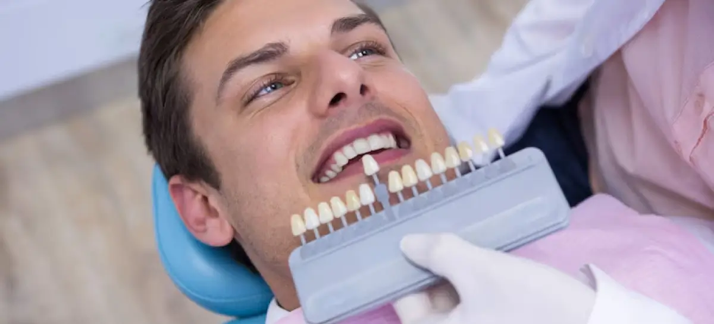
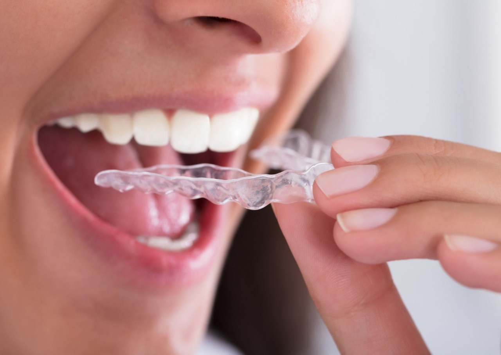

Nossas Especialidades
Combinamos ciência e estética para cuidar da sua saúde bucal em cada detalhe.

Clareamento Dental
Técnicas seguras para recuperar o brilho natural e a brancura do seu sorriso.
Harmonização Orofacial
Procedimentos que equilibram a estética do rosto com delicadeza e precisão.

Lentes de Contato
A solução ideal para corrigir imperfeições de cor e formato de forma definitiva.
Saúde Preventiva
Prevenção e cuidados contínuos para manter sua saúde bucal sempre em dia.

Aparelhos Invisíveis
Ortodontia moderna e discreta para alinhar seus dentes sem o uso de metais.